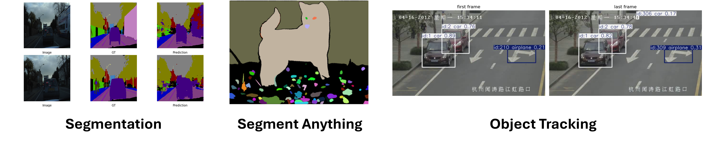
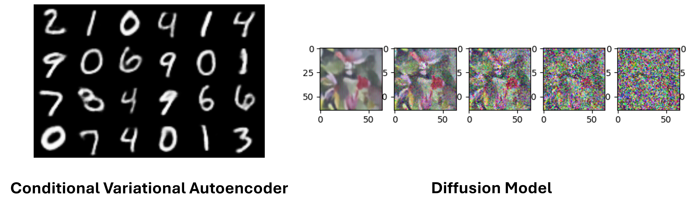

Computer Vision
From classifying a single image to tracking objects across video frames and generating entirely new images from noise, this teaching lab covers the full spectrum of modern computer vision. Across 8 progressive labs you will build, train, and deploy models in PyTorch on AMD GPUs, gaining hands-on experience with the architectures that power real-world vision systems.



Goals
- Build and train CNN and ResNet classifiers for image recognition
- Apply object detection (YOLOv9) and semantic segmentation (SegNet) to real-world datasets
- Use foundation models like Segment Anything (SAM) for zero-shot segmentation
- Implement multi-object tracking across video frames
- Explore generative models including VAE, Conditional VAE, and Diffusion Models
Classification and Detection (CV01 to CV03)
What this section covers
Supervised image classification with CNNs and ResNets, followed by object detection with YOLO.
CV01 — Image Classification with CNN
Build a Convolutional Neural Network from scratch and train it on the CIFAR-100 dataset.
CV02 — Deep Residual Networks (ResNet-50)
Train a ResNet-50 classifier on CIFAR-100 and explore how residual connections solve vanishing gradients.
CV03 — Object Detection with YOLOv9
Apply YOLOv9 to locate and classify multiple objects in a single forward pass.
Segmentation and Tracking (CV04 to CV06)
What this section covers
Pixel-level understanding and temporal reasoning — dense prediction and multi-frame object tracking.
CV04 — Semantic Segmentation with SegNet
Train a SegNet encoder-decoder on the CamVid dataset to assign a class label to every pixel.
CV05 — Segment Anything (SAM)
Run inference with Meta AI's Segment Anything Model for automatic and prompt-based segmentation.
CV06 — Multi-Object Tracking with YOLOv8 + ByteTrack
Track multiple objects across video frames with persistent identities using YOLOv8 and ByteTrack.
Generative Models (CV07 to CV08)
What this section covers
Learning to generate new images — variational autoencoders and diffusion models.
CV07 — Variational Autoencoder (VAE and cVAE)
Implement a VAE on MNIST and explore the Conditional VAE variant for controlled generation.
CV08 — Diffusion Model
Build and train a Diffusion Model that generates images by iteratively denoising random noise.
Explore the other teaching labs: Deep Learning, LLM from Scratch, Physics Simulation.